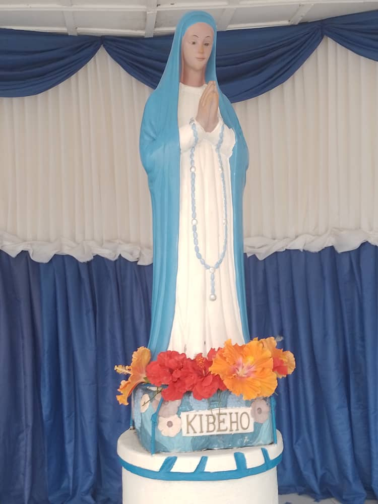

Approved shrine tradition
Fatima: pray the Rosary every day
In 1917, Our Lady appeared to three shepherd children in Fatima, Portugal. Her message was urgent:
conversion, repentance, prayer, sacrifice, and peace. Again and again, she asked for the daily Rosary.
Pray. Repent. Offer sacrifices. Turn toward God. Pray the Rosary for peace.
Read the Fatima shrine narrative
Why this anchors the site
Fatima gives the Rosary a clear public request without turning the site into rumor collecting.
 Approved shrine tradition
Approved shrine tradition
Lourdes: the Rosary at the Grotto
When Saint Bernadette encountered the Lady at Lourdes, she prayed the Rosary. Lourdes reminds us that the
Rosary is not only a prayer of words. It is a prayer of presence.
The shrine also maintains a serious process for examining alleged healings, joining devotion with careful
discernment.
Visit the Lourdes Rosary guide
 Biographical witness
Biographical witness
Pompeii: the Rosary and conversion
Blessed Bartolo Longo was once far from the Catholic faith. His life was transformed, and he became one of
the great apostles of the Rosary.
His story shows that the Rosary is also for the lost, the wounded, the confused, and the returning.
Read the Vatican biography

Approved shrine tradition
Kibeho: repentance and the Seven Sorrows
At Kibeho in Rwanda, the Marian message emphasized conversion, repentance, suffering, and prayer. The Rosary
of the Seven Sorrows became especially important in that spiritual tradition.
Kibeho reminds us that Marian devotion is not sentimental. Mary calls her children to repentance and deep
conversion.
Read the Kibeho shrine history